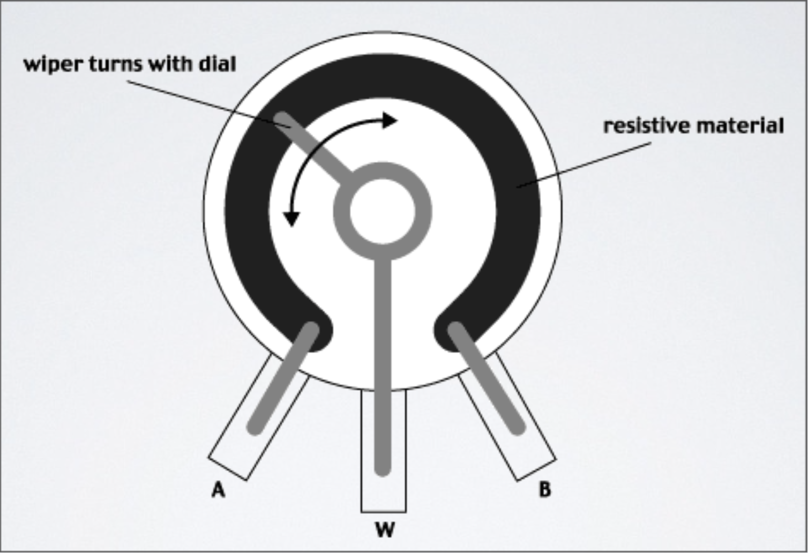

Internet of Things: Week 2
Internet of Things: Week 2
Internet of Things: Week 2
Internet of Things: Week 2
Slides are here: http://mhellar.github.io/iot3/
Grab the code here: http://bit.ly/1Wh6jdM
- Digital Input
- Analog Input
- Analog Output
- RGB Color Mixing
- Controlling Motion With a Servo
- Serial Communication Part 1
Topics for This Week:
Project 1
Digital Input

Parts for this project:
- Solderless Breadboard
- 7 x Flexible Wire Jumpers - 1 x LEDs (any color)
- 2 x 220 Ohm Resistors
- 1 xTactile Pushbutton
- Arduino Duo board
- USB Cable

Button.ino


Project 4
Analog Input

Parts for this project:
- Solderless Breadboard
- 8 x Flexible Wire Jumpers
- 1 x RGB LED
- 3 x 220 Ohm Resistors
- 1 x Blue Potentiometer with white knob
- Arduino Duo board
- USB Cable
The Circuit
- Connect 5V and GND to the side strips
- Connect the short leads of the LED to pins 9,10,11 in series with a resistor.
Upload 'RBG_Pot.ino'
The Potentiometer
RGB LED
int val = analogRead(analogPin); // read the input pin

Upload 'RBG_Pot_Serial.ino'
int LEDGreen=9;
int LEDBlue=10;
int LEDRed=11;
int sensorPin=0;
int val;
void setup(){
Serial.begin(9600);
}
void loop(){
val=analogRead(sensorPin);
Serial.print("sensor = " );
Serial.println(val);
if (val<340) {
analogWrite(LEDRed,255);
analogWrite(LEDBlue,0);
analogWrite(LEDGreen,0);
} else if (val<680) {
analogWrite(LEDRed,0);
analogWrite(LEDBlue,255);
analogWrite(LEDGreen,0);
} else if (val<1024) {
analogWrite(LEDRed,0);
analogWrite(LEDBlue,0);
analogWrite(LEDGreen,255);
}
delay(10);
}
Upload 'SerialMath.ino'
int a = 5;
int b = 10;
int c = 20;
void setup() // run once, when the sketch starts
{
Serial.begin(9600); // set up Serial library at 9600 bps
Serial.println("Here is some math: ");
Serial.print("a = ");
Serial.println(a);
Serial.print("b = ");
Serial.println(b);
Serial.print("c = ");
Serial.println(c);
Serial.print("a + b = "); // add
Serial.println(a + b);
Serial.print("a * c = "); // multiply
Serial.println(a * c);
Serial.print("c / b = "); // divide
Serial.println(c / b);
Serial.print("b - c = "); // subtract
Serial.println(b - c);
}
void loop() // we need this to be here even though its empty
{
}
WE can send Serial data as well
Upload PhysicalPixel.ino
const int redPin = 9; // the pin that the LED is attached to
const int bluePin = 10; // the pin that the LED is attached to
const int greenPin = 11; // the pin that the LED is attached to
int incomingByte; // a variable to read incoming serial data into
void setup() {
// initialize serial communication:
Serial.begin(9600);
// initialize the LED pin as an output:
pinMode(redPin, OUTPUT);
pinMode(bluePin, OUTPUT);
pinMode(greenPin, OUTPUT);
}
void loop() {
// see if there's incoming serial data:
if (Serial.available() > 0) {
// read the oldest byte in the serial buffer:
incomingByte = Serial.read();
// if it's a r , turn on the red LED:
if (incomingByte == 'r') {
digitalWrite(greenPin, LOW);
digitalWrite(bluePin, LOW);
digitalWrite(redPin, HIGH);
}
// if it's a g , turn on the green LED:
if (incomingByte == 'g') {
digitalWrite(greenPin, HIGH);
digitalWrite(bluePin, LOW);
digitalWrite(redPin, LOW);
}
/ if it's a b , turn on the blue LED:
if (incomingByte == 'b') {
digitalWrite(greenPin, LOW);
digitalWrite(bluePin, HIGH);
digitalWrite(redPin, LOW);
}
}
}
RBG Color Mixing
Some Programs to Try:
RainbowRGB.ino
SimpleRGB.ino
RandomRGBFader.ino
Controlling a Servo

Servo_Sweep.ino
#include
Servo myservo; // create servo object to control a servo
// a maximum of eight servo objects can be created
int pos = 0; // variable to store the servo position
void setup() {
myservo.attach(9); // attaches the servo on pin 9 to the servo object }
void loop() {
for(pos = 0; pos < 180; pos += 1) // goes from 0 degrees to 180 degrees
}
{ myservo.write(pos); delay(15);
// in steps of 1 degree
// tell servo to go to position in variable 'pos'
// waits 15ms for the servo to reach the position
}
for(pos = 180; pos>=1; pos-=1) // goes from 180 degrees to 0 degrees
{
myservo.write(pos); // tell servo to go to position in variable 'pos'
delay(15); // waits 15ms for the servo to reach the position
}
Servo With Potentiometer

Upload SERVO_KNOB.INO
Assignment:
- Create a circuit with 3 elements of input and output, one must me analog input
- Write a program for it, it would be nice if you log the input value to serial
- Write a one page paper describibing the circuit and program. Include a photo of the circuit in you paper
For Next Week:
- Install NodeJS - https://nodejs.org/en/
- Install Xcode Command Line Tools - http://osxdaily.com/2014/02/12/install-command-line-tools-mac-os-x/